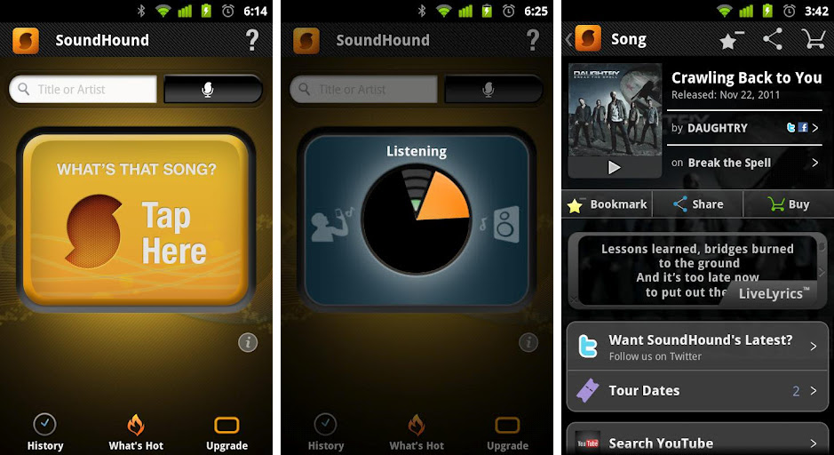
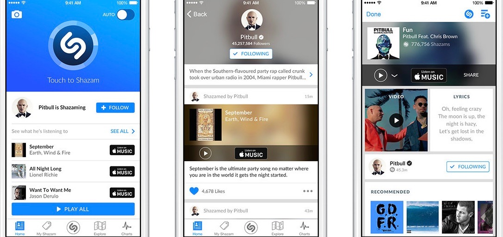

SoundHound
Shazam

SOUNDHOUND versus SHAZAM
| Soundhound | Shazam | |
|---|---|---|
| Music identification | More refined, can recognize music that is sung or hummed into the microphone by the user. | Not as well-equipped to recognize live versions of songs or handle high levels of background noise. |
| Social aspect | Connects to your Spotify account, integrated with YouTube and Apple Music for quick access to music videos. Lacks the somewhat more user friendly interface that Shazam has.  |
Connects you with multiple platforms upon recognitions so that you can see the lyrics, can watch YouTube videos, are hooked up to Spotify playlists and Pandora stations.  |
| Accuracy | Songs typically need to have pretty recognizable meolides and if sung live, need to be sung accurately and in tune. | Better consistency in recognizing songs, and more likely to be able to recognize obscure music. |